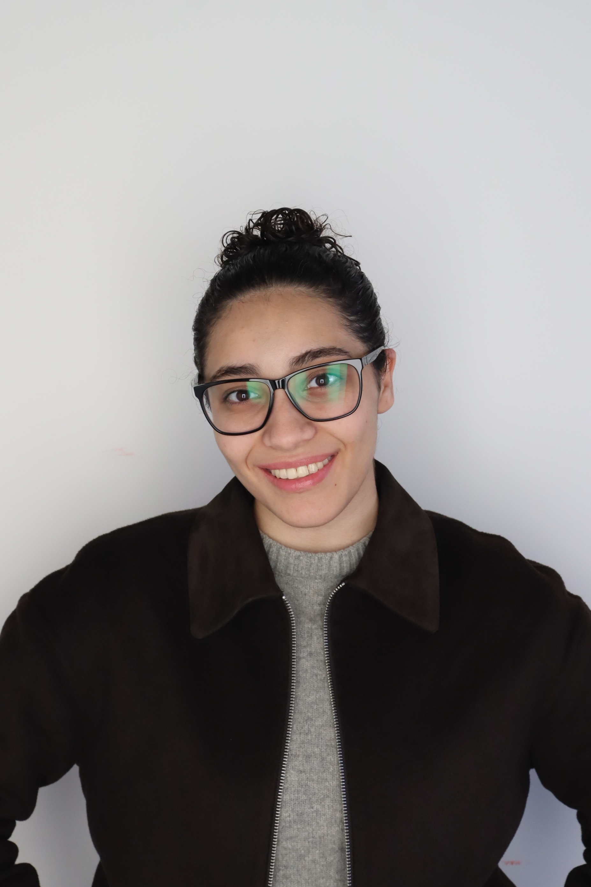

Fulbright Student
MS Computer Science - Artificial Intelligence
University of Southern California

I am a graduate researcher working on intelligent systems and robotics. My research focuses on designing structured representations that help autonomous systems learn and focus on what matters, whether through human guidance, formal constraints, or predictive models.
Advised by:
Prof. Jyotirmoy V. Deshmukh • Prof. Erdem Biyik
CPS VIDA Lab
On-going
CPS VIDA Lab
Under review at CVPR 2026
Lira Lab
On-going
Benha University - Graduation Project
Funded autonomous robot for aquatic waste retrieval with Visual SLAM and YOLO-based debris detection
Robotics • ROS • YOLO • SLAMUSC - CSCI 567
EEG-to-audio reconstruction using CNN, LSTM, and Transformer architectures on music stimuli
Deep Learning • EEG • AudioPasadena Digital
Intelligent taxiing system for pilots using VLMs for sign detection and airport graph traversal
VLMs • YOLOv8 • Computer VisionUSC - CSCI 544
Open-vocabulary brain-to-text translation for assistive communication using Bi-LSTM encoder with BART decoder
NLP • EEG • TransformersPasadena Digital, Los Angeles
OwlVision - Aviation Situational Awareness Taxiing System
Valeo, Cairo, Egypt
Automated HIL Testing • CI/CD • Tooling
University of Southern California, Los Angeles
Fulbright Student
Benha University, Egypt
First in Class • Excellent with Highest Honors